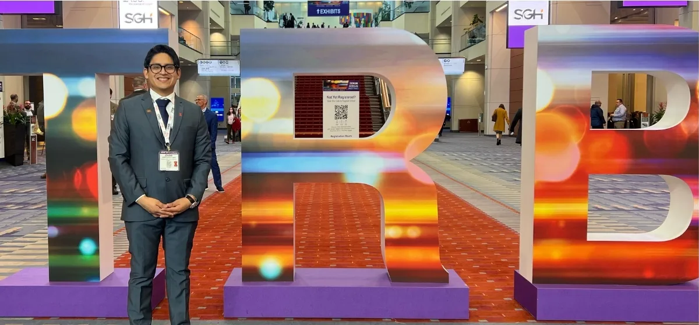
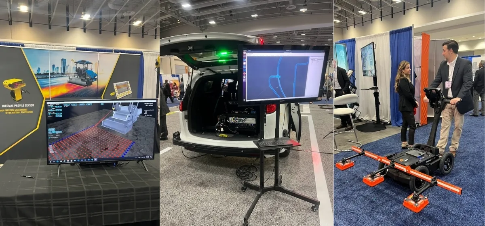
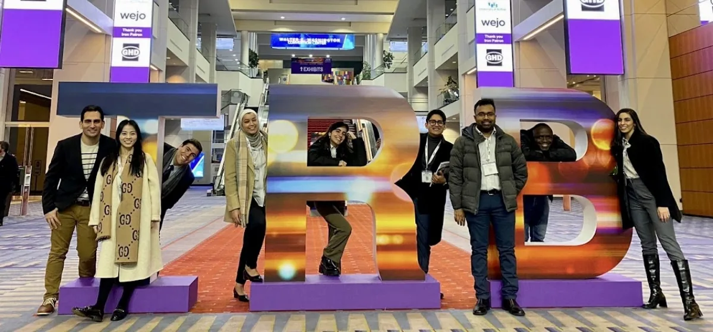

The Transportation Research Board Annual Meeting 2023
On the Move: Highlights from the 102nd Annual Meeting
My second Transportation Research Board (TRB) Annual Meeting felt very different from the first. The novelty was gone, but in a good way. I arrived with a clearer strategy. I didn't present this year as my research project was still in progress and my MS thesis work was far from being complete. Instead, I focused on networking, attending sessions, and enjoying the vibrant atmosphere of Washington D.C. There is something oddly simbolyc about that TRB sign inside the Walter E. Washington Convention Center (Figure 1). While during the first year, it was basically a landmark (proof you made it), the second time around, it felt more like a ritual of belonging to a community. Being at TRB while your work is still cooking makes you listen harder.

Iconic Sign at the Walter E. Washington Convention Center
The Exhibit Hall
On Sunday, the Exhibit Hall opened its doors, showcasing the latest innovations and research in transportation. It is also a good place to make connections for future jobs, and to discuss with manufacturers and service providers about ongoing projects and equipment recommendations. Posters and lecterns are great, but walking past deployed systems makes the field feel operational.

From left to right: thermal profile sensor, autonomous vehicle, and DPS
A thermal profile snesor booth. An autonomous vehicle setup with live visualization on a big screen. A Density Profiling System (DPS) demo. The exhibit hall quietly teaches you waht the industry believe is measurable, automatable, and worth paying for. It also exposes a truth that is easy to forget in grad school: the best ideas don't win by being clever; they win by being deployable. Seeing end-to-end systems forces you to ask the uncomfortable question: if my research works, what would it look like as a tool someone actually uses?. Or could I possibly build it into something deployable? Research and Development (R&D) is definitely an area I would like to explore more in the future.
From Visitor to Member
There was the ICT group photo at the TRB sign. Our little snapshot of the big event (Figure 3) behind the posters and lecterns. Conferences can be intense and impersonal, but phots like these are a reminder that research is about people with different skills pushing in roughly the same direction.
Everyone shows up carrying their own projects, deadlines, and long-term questions, but for a few days TRB compresses all that into a shared experience. TRB is chaotic, but genuinely fun when you are with people who care about similar things. In the lab, we have this thing for showing and cheering up when someone is presenting. It's a small gesture, but it helps create a sense of camaraderie and support. And also, I guess it makes one feel less like an imposter in a room full of experts. Because our group is quite extensive, you can definitely tell the difference in the audience when someone from ICT is presenting. Next year will be my turn to present. I am looking forward to it!

From left to right: Egemen Okte, Qingwen Zhou, Javier Garcia-Mainieri, Yusra Al Hadidi, Lara Diab, Johann Cardenas, Aravind Ramakrishan, Abdulgafar Sulaiman, and Lama Abufares